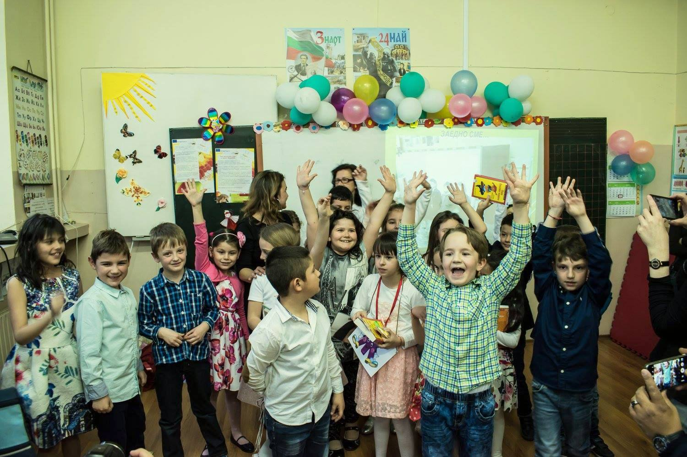
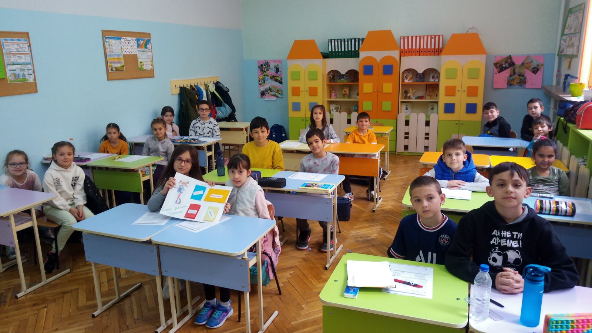

30. СУ „Братя Миладинови” е първото училище с разширено изучаване на немски и испански език – традиция, която преминава през годините до днес и му придава облик на училище с утвърден чуждоезиков профил.
Училището е основано като ЕСПУ „Людмила Живкова”. Сградата е една от най-интересно конструираните постройки в новосъздадения тогава модерен столичен комплекс „Зона Б-5” – оригиналното архитектурно решение вгражда по естествен начин сградата на бившето 68-мо основно училище в новата, авангардна за времето си конструкция. Пет години след основаването си училището е преименувано на Образцово единно средно политехническо училище „Знаме на мира”. 80-те години на миналия век е период, в който то играе водеща роля в реализирането на идеите на международното движение „Знаме на мира”, домакин е на едноименната асамблея и се превръща в еталон за масово училище според тогавашните очаквания на обществото.
 След демократичните промени, през 1993 г., с решение на МОН, 30. СУ получава сегашното си име – „Братя Миладинови”, унаследено от "вграденото” в основите му 68-о училище. Промяната преосмисля усилията на педагогическия екип и учениците с най-светлите стойности от епохата на националното Възраждане.Тези стойности стават естествена основа за приближаване на училището към принципите на европейското образование.
30. СУ е базово учебно заведение на СУ „Св. Кл. Охридски”. Разполага с 25 класни стаи,кабинети по биология,химия, физика, география, история, музика, три кабинета по информационни технологии и два по труд и техника,актова зала, оборудвана видеозала, библиотека с над 13 000 тома,физкултурен салон и открити спортни площадки.В него се обучават над 800 ученици, а за овладяването на знанията се грижи педагогически екип от висококвалифицирани базови учители, автори на учебници и учебни помагала, носители на награди и отличия. Обучението по немски и испански език, за което училището е профилирано, е по най-съвременни учебни програми,а много от завършилите се реализираткато студенти в чужбина. Учениците имат възможност да проявяват творчество и инициативност и да се доближат до европейските принципи на ученическо самоуправление чрез разнообразните прояви на Европейския клуб /част от мрежата на европейските училищни клубове в страната/, както и в съвместни проекти с традиционните партньори на училището - СУ „Св. Климент Охридски”, Фондация „Пайдея”, Националния дворец на децата, читалище „Аура”.